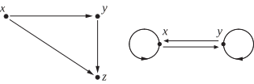

Section 7.2 Equivalence Relations
Beginning Activity Beginning Activity 1: Properties of Relations
In previous mathematics courses, we have worked with the equality relation. For example, let \(R\) be the relation on \(\Z\) defined as follows: For all \(a, b \in \Z\text{,}\) \(a \mathrel{R} b\) if and only if \(a = b\text{.}\) We know this equality relation on \(\Z\) has the following properties:
For each \(a \in \Z\text{,}\) \(a = a\) and so \(a \mathrel{R} a\text{.}\)
For all \(a, b \in \Z\text{,}\) if \(a = b\text{,}\) then \(b = a\text{.}\) That is, if \(a \mathrel{R} b\text{,}\) then \(b \mathrel{R} a\text{.}\)
For all \(a, b, c \in \Z\text{,}\) if \(a = b\) and \(b = c\text{,}\) then \(a = c\text{.}\) That is, if \(a \mathrel{R} b\) and \(b \mathrel{R} c\text{,}\) then \(a \mathrel{R} c\text{.}\)
In mathematics, when something satisfies certain properties, we often ask if other things satisfy the same properties. Before investigating this, we will give names to these properties.
Definition.
Let \(A\) be a nonempty set and let \(R\) be a relation on \(A\text{.}\)
The relation \(R\) is reflexive on \(\boldsymbol{A}\) provided that for each \(x \in A\text{,}\) \(x \mathrel{R} x\) or, equivalently, \(\left( {x, x} \right) \in R\text{.}\)
The relation \(R\) is symmetric provided that for every \(x, y \in A\text{,}\) if \(x \mathrel{R} y\text{,}\) then \(y \mathrel{R} x\) or, equivalently, for every \(x, y \in A\text{,}\) if \(\left( {x, y} \right) \in R\text{,}\) then \(\left( {y, x} \right) \in R\text{.}\)
The relation \(R\) is transitive provided that for every \(x, y, z \in A\text{,}\) if \(x \mathrel{R} y\) and \(y \mathrel{R} z\text{,}\) then \(x \mathrel{R} z\) or, equivalently, for every \(x, y, z \in A\text{,}\) if \(\left( {x, y} \right) \in R\) and \(\left( {y, z} \right) \in R\text{,}\) then \(\left( {x, z} \right) \in R\text{.}\)
Before exploring examples, for each of these properties, it is a good idea to understand what it means to say that a relation does not satisfy the property. So let \(A\) be a nonempty set and let \(R\) be a relation on \(A\text{.}\)
1.
Carefully explain what it means to say that the relation \(R\) is not reflexive on the set \(A\text{.}\)
2.
Carefully explain what it means to say that the relation \(R\) is not symmetric.
3.
Carefully explain what it means to say that the relation \(R\) is not transitive.
To illustrate these properties, we let \(A = \left\{ {1, 2, 3, 4} \right\}\) and define the relations \(R\) and \(T\) on \(A\) as follows:
4.
Draw a directed graph for the relation \(R\text{.}\) Then explain why the relation \(R\) is reflexive on \(A\text{,}\) is not symmetric, and is not transitive.
5.
Draw a directed graph for the relation \(T\text{.}\) Is the relation \(T\) reflexive on \(A\text{?}\) Is the relation \(T\) symmetric? Is the relation \(T\) transitive? Explain.
Beginning Activity Beginning Activity 2: Review of Congruence Modulo \(\boldsymbol{n}\)
1.
Let \(a, b \in \mathbb{Z}\) and let \(n \in \mathbb{N}\text{.}\) On Definition of Section 3.1, we defined what it means to say that \(a\) is congruent to \(b\) modulo \(n\text{.}\) Write this definition and state two different conditions that are equivalent to the definition.
2.
Explain why congruence modulo \(n\) is a relation on \(\mathbb{Z}\text{.}\)
3.
Carefully review Theorem 3.36 and the proofs given on Theorem 3.36 of Section 3.5. In terms of the properties of relations introduced in Beginning Activity 1, what does this theorem say about the relation of congruence modulo \(n\) on the integers?
4.
Write a complete statement of Theorem 3.37 and Corollary 3.38.
5.
Write a proof of the symmetric property for congruence modulo \(n\text{.}\) That is, prove the following:
Let \(a, b \in \mathbb{Z}\) and let \(n \in \mathbb{N}\text{.}\) If \(a \equiv b \pmod n\text{,}\) then \(b \equiv a \pmod n\text{.}\)
Subsection Directed Graphs and Properties of Relations
In Section 7.1, we used directed graphs, or digraphs, to represent relations on finite sets. Three properties of relations were introduced in Beginning Activity 1 and will be repeated in the following descriptions of how these properties can be visualized on a directed graph.
Let \(A\) be a nonempty set and let \(R\) be a relation on \(A\text{.}\)
The relation \(R\) is reflexive on \(\boldsymbol{A}\) provided that for each \(x \in A\text{,}\) \(x \mathrel{R} x\) or, equivalently, \(\left( {x, x} \right) \in R\text{.}\) This means that if a reflexive relation is represented on a digraph, there would have to be a loop at each vertex, as is shown in the following figure.
The relation \(R\) is symmetric provided that for every \(x, y \in A\text{,}\) if \(x \mathrel{R} y\text{,}\) then \(y \mathrel{R} x\) or, equivalently, for every \(x, y \in A\text{,}\) if \(\left( {x, y} \right) \in R\text{,}\) then \(\left( {y, x} \right) \in R\text{.}\) This means that if a symmetric relation is represented on a digraph, then anytime there is a directed edge from one vertex to a second vertex, there would be a directed edge from the second vertex to the first vertex, as is shown in the following figure.
-
The relation \(R\) is transitive provided that for every \(x, y, z \in A\text{,}\) if \(x \mathrel{R} y\) and \(y \mathrel{R} z\text{,}\) then \(x \mathrel{R} z\) or, equivalently, for every \(x, y, z \in A\text{,}\) if \(\left( {x, y} \right) \in R\) and \(\left( {y, z} \right) \in R\text{,}\) then \(\left( {x, z} \right) \in R\text{.}\) So if a transitive relation is represented by a digraph, then anytime there is a directed edge from a vertex \(x\) to a vertex \(y\) and a directed edge from \(y\) to a vertex \(z\text{,}\) there would be a directed edge from \(x\) to \(z\text{.}\)
In addition, if a transitive relation is represented by a digraph, then anytime there is a directed edge from a vertex \(x\) to a vertex \(y\) and a directed edge from \(y\) to the vertex \(x\text{,}\) there would be loops at \(x\) and \(y\text{.}\) These two situations are illustrated as follows:

Progress Check 7.11. Properties of Relations.
Let \(A = \{ a, b, c, d \}\) and let \(R\) be the following relation on \(A\text{:}\)
Draw a directed graph for the relation \(R\) and then determine if the relation \(R\) is reflexive on \(A\text{,}\) if the relation \(R\) is symmetric, and if the relation \(R\) is transitive.
The relation \(R\text{:}\)
Is not reflexive since \((c, c) \notin R\) and \((d, d) \notin R\text{.}\)
Is symmetric.
Is not transitive. For example, \((c, a) \in R\text{,}\) \((a, c) \in R\text{,}\) but \((c, c) \notin R\text{.}\)
Subsection Definition of an Equivalence Relation
In mathematics, as in real life, it is often convenient to think of two different things as being essentially the same. For example, when you go to a store to buy a cold soft drink, the cans of soft drinks in the cooler are often sorted by brand and type of soft drink. The Coca Colas are grouped together, the Pepsi Colas are grouped together, the Dr. Peppers are grouped together, and so on. When we choose a particular can of one type of soft drink, we are assuming that all the cans are essentially the same. Even though the specific cans of one type of soft drink are physically different, it makes no difference which can we choose. In doing this, we are saying that the cans of one type of soft drink are equivalent, and we are using the mathematical notion of an equivalence relation.
An equivalence relation on a set is a relation with a certain combination of properties that allow us to sort the elements of the set into certain classes. In this section, we will focus on the properties that define an equivalence relation, and in the next section, we will see how these properties allow us to sort or partition the elements of the set into certain classes.
Definition.
Let \(A\) be a nonempty set. A relation \(\sim\) on the set \(A\) is an equivalence relation provided that \(\sim\) is reflexive, symmetric, and transitive. For \(a, b \in A\text{,}\) if \(\sim\) is an equivalence relation on \(A\) and \(a \sim b\text{,}\) we say that \(\boldsymbol{a}\) is equivalent to \(\boldsymbol{b}\).
Most of the examples we have studied so far have involved a relation on a small finite set. For these examples, it was convenient to use a directed graph to represent the relation. It is now time to look at some other type of examples, which may prove to be more interesting. In these examples, keep in mind that there is a subtle difference between the reflexive property and the other two properties. The reflexive property states that some ordered pairs actually belong to the relation \(R\text{,}\) or some elements of \(A\) are related. The reflexive property has a universal quantifier and, hence, we must prove that for all \(x \in A\text{,}\) \(x \mathrel{R} x\text{.}\) Symmetry and transitivity, on the other hand, are defined by conditional sentences. We often use a direct proof for these properties, and so we start by assuming the hypothesis and then showing that the conclusion must follow from the hypothesis.
Example 7.12. A Relation that Is Not an Equivalence Relation.
Let \(M\) be the relation on \(\mathbb{Z}\) defined as follows:
For \(a, b \in \mathbb{Z}\text{,}\) \(a \mathrel{M} b\) if and only if \(a\) is a multiple of \(b\text{.}\)
So \(a \mathrel{M} b\) if and only if there exists a \(k \in \mathbb{Z}\) such that \(a = b k\text{.}\)
The relation \(M\) is reflexive on \(\mathbb{Z}\) since for each \(x \in \mathbb{Z}\text{,}\) \(x = x \cdot 1\) and, hence, \(x \mathrel{M} x\text{.}\)
Notice that \(4 \mathrel{M} 2\text{,}\) but \(2 \mathrel{\not \negthickspace M} 4\text{.}\) So there exist integers \(x\) and \(y\) such that \(x \mathrel{M} y\) but \(y \mathrel{\not \negthickspace M} x\text{.}\) Hence, the relation \(M\) is not symmetric.
-
Now assume that \(x \mathrel{M} y\) and \(y \mathrel{M} z\text{.}\) Then there exist integers \(p\) and \(q\) such that
\begin{equation*} x = y p\text{ and } y = z q\text{.} \end{equation*}Using the second equation to make a substitution in the first equation, we see that \(x = z \left( {p q} \right)\text{.}\) Since \(p q \in \mathbb{Z}\text{,}\) we have shown that \(x\) is a multiple of \(z\) and hence \(x \mathrel{M} z\text{.}\) Therefore, \(M\) is a transitive relation.
The relation \(M\) is reflexive on \(\Z\) and is transitive, but since \(M\) is not symmetric, it is not an equivalence relation on \(\Z\text{.}\)
Progress Check 7.13. A Relation that Is an Equivalence Relation.
Define the relation \(\sim\) on \(\Q\) as follows: For all \(a, b \in \Q\text{,}\) \(a \sim b\) if and only if \(a - b \in \Z\text{.}\) For example:
\(\dfrac{3}{4} \sim \dfrac{7}{4}\) since \(\dfrac{3}{4} - \dfrac{7}{4} = -1\) and \(-1 \in \Z\text{.}\)
\(\dfrac{3}{4} \not \sim \dfrac{1}{2}\) since \(\dfrac{3}{4} - \dfrac{1}{2} = \dfrac{1}{4}\) and \(\dfrac{1}{4} \notin \Z\text{.}\)
To prove that \(\sim\) is reflexive on \(\Q\text{,}\) we note that for all \(a \in \Q\text{,}\) \(a - a = 0\text{.}\) Since \(0 \in \Z\text{,}\) we conclude that \(a \sim a\text{.}\) Now prove that the relation \(\sim\) is symmetric and transitive, and hence, that \(\sim\) is an equivalence relation on \(\Q\text{.}\)
Proof that the relation \(\sim\) is symmetric: Let \(a, b \in \Q\) and assume that \(a \sim b\text{.}\) This means that \(a - b \in \Z\text{.}\) Therefore, \(-(a - b) \in \Z\) and this means that \(b - a \in \Z\text{,}\) and hence, \(b \sim a\text{.}\)
Proof that the relation \(\sim\) is transitive: Let \(a, b, c \in \Q\) and assume that \(a \sim b\) and \(b \sim c\text{.}\) This means that \(a - b \in \Z\) and that \(b - c \in \Z\text{.}\) Therefore, \(\left((a - b) + (b - c) \right) \in \Z\) and this means that \(a - c \in \Z\text{,}\) and hence, \(a \sim c\text{.}\)
Subsection Congruence Modulo \(\boldsymbol{n}\)
One of the important equivalence relations we will study in detail is that of congruence modulo \(n\text{.}\) We reviewed this relation in Beginning Activity 2.
Theorem 3.36 tells us that congruence modulo \(n\) is an equivalence relation on \(\mathbb{Z}\text{.}\) Recall that by the Division Algorithm, if \(a \in \mathbb{Z}\text{,}\) then there exist unique integers \(q\) and \(r\) such that
Theorem 3.37 and Corollary 3.38 then tell us that \(a \equiv r \pmod n\text{.}\) That is, \(a\) is congruent modulo \(n\) to its remainder \(r\) when it is divided by \(n\text{.}\) When we use the term “remainder” in this context, we always mean the remainder \(r\) with \(0 \leq r \lt n\) that is guaranteed by the Division Algorithm. We can use this idea to prove the following theorem.
Theorem 7.14.
Let \(n \in \mathbb{N}\) and let \(a, b \in \mathbb{Z}\text{.}\) Then \(a \equiv b \pmod n\) if and only if \(a\) and \(b\) have the same remainder when divided by \(n\text{.}\)
Proof.
Let \(n \in \mathbb{N}\) and let \(a, b \in \mathbb{Z}\text{.}\) We will first prove that if \(a\) and \(b\) have the same remainder when divided by \(n\text{,}\) then \(a \equiv b \pmod n\text{.}\) So assume that \(a\) and \(b\) have the same remainder when divided by \(n\text{,}\) and let \(r\) be this common remainder. Then, by Theorem 3.37,
Since congruence modulo \(n\) is an equivalence relation, it is a symmetric relation. Hence, since \(b \equiv r \pmod n\text{,}\) we can conclude that \(r \equiv b \pmod n\text{.}\) Combining this with the fact that \(a \equiv r \pmod n\text{,}\) we now have
We can now use the transitive property to conclude that \(a \equiv b \pmod n\text{.}\) This proves that if \(a\) and \(b\) have the same remainder when divided by \(n\text{,}\) then \(a \equiv b \pmod n\text{.}\)
We will now prove that if \(a \equiv b \pmod n\text{,}\) then \(a\) and \(b\) have the same remainder when divided by \(n\text{.}\) Assume that \(a \equiv b \pmod n\text{,}\) and let \(r\) be the least nonnegative remainder when \(b\) is divided by \(n\text{.}\) Then \(0 \leq r \lt n\) and, by Theorem 3.37,
Now, using the facts that \(a \equiv b \pmod n\) and \(b \equiv r \pmod n\text{,}\) we can use the transitive property to conclude that
This means that there exists an integer \(q\) such that \(a - r = nq\) or that
Since we already know that \(0 \leq r \lt n\text{,}\) the last equation tells us that \(r\) is the least nonnegative remainder when \(a\) is divided by \(n\text{.}\) Hence we have proven that if \(a \equiv b \pmod n\text{,}\) then \(a\) and \(b\) have the same remainder when divided by \(n\text{.}\)
Subsection Examples of Other Equivalence Relations
The relation \(\sim\) on \(\Q\) from Progress Check 7.13 is an equivalence relation.
-
Let \(A\) be a nonempty set. The equality relation on \(\boldsymbol{A}\) is an equivalence relation. This relation is also called the identity relation on \(\boldsymbol{A}\) and is denoted by \(I_A\text{,}\) where
\begin{equation*} I_A = \left\{ {\left( {x, x} \right) \mid x \in A} \right\}\!\text{.} \end{equation*} -
Define the relation \(\sim\) on \(\mathbb{R}\) as follows:
For \(a, b \in \mathbb{R}\text{,}\) \(a \sim b\) if and only if there exists an integer \(k\) such that \(a - b = 2k\pi\text{.}\)
We will prove that the relation \(\sim\) is an equivalence relation on \(\mathbb{R}\text{.}\) The relation \(\sim\) is reflexive on \(\mathbb{R}\) since for each \(a \in \mathbb{R}\text{,}\) \(a - a = 0 = 2 \cdot 0 \cdot \pi\text{.}\)
Now, let \(a, b \in \mathbb{R}\) and assume that \(a \sim b\text{.}\) We will prove that \(b \sim a\text{.}\) Since \(a \sim b\text{,}\) there exists an integer \(k\) such that
\begin{equation*} a - b = 2k\pi\text{.} \end{equation*}By multiplying both sides of this equation by \(-1\text{,}\) we obtain
\begin{align*} ( { - 1} )( {a - b} ) \amp = ( { - 1} )( {2k\pi } )\\ b = a \amp = 2( { - k} )\pi\text{.} \end{align*}Since \(- k \in \mathbb{Z}\text{,}\) the last equation proves that \(b \sim a\text{.}\) Hence, we have proven that if \(a \sim b\text{,}\) then \(b \sim a\) and, therefore, the relation \(\sim\) is symmetric.
To prove transitivity, let \(a, b, c \in \mathbb{R}\) and assume that \(a \sim b\) and \(b \sim c\text{.}\) We will prove that \(a \sim c\text{.}\) Now, there exist integers \(k\) and \(n\) such that
\begin{equation*} a - b = 2k\pi \text{ and } b - c = 2n\pi\text{.} \end{equation*}By adding the corresponding sides of these two equations, we see that
\begin{align*} ( {a - b} ) + ( {b - c} ) \amp = 2k\pi + 2n\pi\\ a - c \amp = 2( {k + n} )\pi \end{align*}By the closure properties of the integers, \(k + n \in \mathbb{Z}\text{.}\) So this proves that \(a \sim c\) and, hence the relation \(\sim\) is transitive.
We have now proven that \(\sim\) is an equivalence relation on \(\mathbb{R}\text{.}\) This equivalence relation is important in trigonometry. If \(a \sim b\text{,}\) then there exists an integer \(k\) such that \(a - b = 2k\pi\) and, hence, \(a = b + k( {2\pi } )\text{.}\) Since the sine and cosine functions are periodic with a period of \(2\pi\text{,}\) we see that
\begin{align*} \sin a \amp = \sin( {b + k( {2\pi } )} ) = \sin b,\text{ and }\\ \cos a \amp = \cos( {b + k( {2\pi } )} ) = \cos b\text{.} \end{align*}Therefore, when \(a \sim b\text{,}\) each of the trigonometric functions have the same value at \(a\) and \(b\text{.}\)
For an example from Euclidean geometry, we define a relation \(P\) on the set \(\mathcal{L}\) of all lines in the plane as follows:
For \(l_1 , l_2 \in \mathcal{L}\text{,}\) \(l_1 \mathrel{P}l_2\) if and only if \(l_1\) is parallel to \(l_2\) or \(l_1 = l_2\text{.}\)
We added the second condition to the definition of \(P\) to ensure that \(P\) is reflexive on \(\mathcal{L}\text{.}\) Theorems from Euclidean geometry tell us that if \(l_1\) is parallel to \(l_2\text{,}\) then \(l_2\) is parallel to \(l_1\text{,}\) and if \(l_1\) is parallel to \(l_2\) and \(l_2\) is parallel to \(l_3\text{,}\) then \(l_1\) is parallel to \(l_3\text{.}\) (Drawing pictures will help visualize these properties.) This tells us that the relation \(P\) is reflexive, symmetric, and transitive and, hence, an equivalence relation on \(\mathcal{L}\text{.}\)
Progress Check 7.15. Another Equivalence Relation.
Let \(U\) be a finite, nonempty set and let \(\mathcal{P}\left( U \right)\) be the power set of \(U\text{.}\) Recall that \(\mathcal{P}\left( U \right)\) consists of all subsets of \(U\text{.}\) (See Definition.) Define the relation \(\approx\) on \(\mathcal{P}\left( U \right)\) as follows:
For \(A, B \in \mathcal{P}\left( U \right)\text{,}\) \(A \approx B\) if and only if \(\card(A) = \card(B)\text{.}\)For the definition of the cardinality of a finite set, see Definition. This relation states that two subsets of \(U\) are equivalent provided that they have the same number of elements. Prove that \(\approx\) is an equivalence relation on the power set \(\mathcal{P}\left( U \right)\text{.}\)
The relation \(\approx\) is reflexive on \(\mathcal{P}\left( U \right)\) since for all \(A \in \mathcal{P}\left( U \right)\text{,}\) \(\card(A) = \card(A)\text{.}\)
The relation \(\approx\) is symmetric since for all \(A, B \in \mathcal{P}\left( U \right)\text{,}\) if \(\card(A) = \card(B)\text{,}\) then using the fact that equality on \(\Z\) is symmetric, we conclude that \(\card(B) = \card(A)\text{.}\) That is, if \(A\) has the same number of elements as \(B\text{,}\) then \(B\) has the same number of elements as \(A\text{.}\)
The relation \(\approx\) is transitive since for all \(A, B, C \in \mathcal{P}\left( U \right)\text{,}\) if \(\card(A) = \card(B)\) and \(\card(B) = \card(C)\text{,}\) then using the fact that equality on \(\Z\) is transitive, we conclude that \(\card(A) = \card(C)\text{.}\) That is, if \(A\) and \(B\) have the same number of elements and \(B\) and \(C\) have the same number of elements, then \(A\) and \(C\) have the same number of elements.
Therefore, the relation \(\approx\) is an equivalence relation on \(\mathcal{P}\left( U \right)\text{.}\)
Exercises Exercises
1.
Let \(A = \left\{ {a, b} \right\}\) and let \(R = \left\{ {\left( {a, b} \right)} \right\}\text{.}\) Is \(R\) an equivalence relation on \(A\text{?}\) If not, is \(R\) reflexive, symmetric, or transitive? Justify all conclusions.
The relation \(R\) is not reflexive on \(A\) and is not symmetric. However, it is transitive since the conditional statement “For all \(x, y, z \in A\text{,}\) if \(x \mathrel{R} y\) and \(y \mathrel{R} z\text{,}\) then \(x \mathrel{R} z\)” is a true conditional statement since the hypothesis will always be false.
2.
Let \(A = \left\{ {a, b, c} \right\}\text{.}\) For each of the following, draw a directed graph that represents a relation with the specified properties.
(a)
A relation on \(A\) that is symmetric but not transitive
(b)
A relation on \(A\) that is transitive but not symmetric
(c)
A relation on \(A\) that is symmetric and transitive but not reflexive on \(A\)
(d)
A relation on \(A\) that is not reflexive on \(A\text{,}\) is not symmetric, and is not transitive
(e)
A relation on \(A\text{,}\) other than the identity relation, that is an equivalence relation on \(A\)
3.
Let \(A = \left\{ {1, 2, 3, 4, 5} \right\}\text{.}\) The identity relation on \(A\) is
Determine an equivalence relation on \(A\) that is different from \(I_A\) or explain why this is not possible.
There are many possible equivalence relations on this set. Perhaps one of the easier ways to determine one is to first decide what elements will be equivalent. For example, suppose we say that we want 1 and 2 to be equivalent (and of course, all elements will be equivalent to themselves). So if we use the symbol \(\sim\) for the equivalence relation, then we need \(1 \sim 2\) and \(2 \sim 1\text{.}\) Using set notation, we can write this equivalence relation as
4.
Let \(R = \left\{ { {\left( {x, y} \right) \in \mathbb{R} \times \mathbb{R} } \mid \left| x \right| + \left| y \right| = 4} \right\}\text{.}\) Then \(R\) is a relation on \(\mathbb{R}\text{.}\) Is \(R\) an equivalence relation on \(\R\text{?}\) If not, is \(R\) reflexive, symmetric, or transitive? Justify all conclusions.
The relation \(R\) is not reflexive on \(A\text{.}\) For example, \(\left( 4, 4 \right) \notin R\text{.}\) The relation \(R\) is symmetric. If \(\left( a, b \right) \in R\text{,}\) then \(\left| a \right| + \left| b \right| = 4\text{.}\) Therefore, \(\left| b \right| + \left| a \right| = 4\text{,}\) and hence, \(\left( b, a \right) \in R\text{.}\) The relation \(R\) is not transitive. For example, \(\left( 4, 0 \right) \in R\text{,}\) \(\left( 0, 4 \right) \in R\text{,}\) and \(\left( 4, 4 \right) \notin R\text{.}\) The relation \(R\) is not an equivalence relation.
5.
A relation \(R\) is defined on \(\Z\) as follows: For all \(a, b \in \Z\text{,}\) \(a \mathrel{R} b\) if and only if \(\left| a - b \right| \leq 3\text{.}\) Is \(R\) an equivalence relation on \(\R\text{?}\) If not, is \(R\) reflexive, symmetric, or transitive? Justify all conclusions.
6.
Let \(f\x \mathbb{R} \to \mathbb{R}\) be defined by \(f( x ) = x^2 - 4\) for each \(x \in \mathbb{R}\text{.}\) Define a relation \(\sim\) on \(\mathbb{R}\) as follows:
(a)
Is the relation \(\sim\) an equivalence relation on \(\mathbb{R}\text{?}\) Justify your conclusion.
The relation \(\sim\) is an equivalence relation. For \(a \in \mathbb{R}\text{,}\) \(a \sim a\) since \(f \left( a \right) = f \left( a \right)\text{.}\) So, \(\sim\) is reflexive. For \(a, b \in \mathbb{R}\text{,}\) if \(a \sim b\text{,}\) then \(f \left( a \right) = f \left( b \right)\text{.}\) So, \(f \left( b \right) = f \left( a \right)\text{.}\) Hence, \(b \sim a\) and \(\sim\) is symmetric. For \(a, b, c \in \mathbb{R}\text{,}\) if \(a \sim b\) and \(b \sim c\text{,}\) then \(f \left( a \right) = f \left( b \right)\) and \(f \left( b \right) = f \left( c \right)\text{.}\) So, \(f \left( a \right) = f \left( c \right)\text{.}\) Hence, \(a \sim c\) and \(\sim\) is transitive.
(b)
Determine all real numbers in the set \(C = \left\{ { {x \in \R } \mid x \sim 5} \right\}\text{.}\)
\(C = \left \{ -5, 5 \right \}\)
7.
Repeat Exercise 6 using the function \(f\x \mathbb{R} \to \mathbb{R}\) that is defined by \(f( x ) = x^2 - 3x - 7\) for each \(x \in \mathbb{R}\text{.}\)
8.
Complete the following.
(a)
Repeat Task 6.a using the function \(f\x \mathbb{R} \to \mathbb{R}\) that is defined by \(f( x ) = \sin x\) for each \(x \in \mathbb{R}\text{.}\)
(b)
Determine all real numbers in the set \(C = \left\{ { {x \in \R } \mid x \sim \pi } \right\}\text{.}\)
9.
Define the relation \(\sim\) on \(\Q\) as follows: For \(a, b \in \Q\text{,}\) \(a \sim b\) if and only if \(a - b \in \Z\text{.}\) In Progress Check 7.13, we showed that the relation \(\sim\) is an equivalence relation on \(\Q\text{.}\)
(a)
List four different elements of the set \(C = \left\{ { {x \in \Q } \mid x \sim \dfrac{5}{7} } \right\}\text{.}\)
(b)
Use set builder notation (without using the symbol \(\sim\)) to specify the set \(C\text{.}\)
(c)
Use the roster method to specify the set \(C\text{.}\)
10.
Let \(\sim\) and \(\approx\) be relations on \(\Z\) defined as follows:
For \(a, b \in \Z\text{,}\) \(a \sim b\) if and only if 2 divides \(a + b\text{.}\)
For \(a, b \in \Z\text{,}\) \(a \approx b\) if and only if 3 divides \(a + b\text{.}\)
(a)
Is \(\sim\) an equivalence relation on \(\Z\text{?}\) If not, is this relation reflexive, symmetric, or transitive?
The relation \(\sim\) is an equivalence relation on \(\Z\text{.}\) It is reflexive since for each integer \(a\text{,}\) \(a + a = 2a\) and hence, \(2\) divides \(a + a\text{.}\) Now let \(a, b \in \Z\) and assume that 2 divides \(a + b\text{.}\) Since \(a + b = b + a\text{,}\) 2 divides \(b + a\) and hence, \(\sim\) is symmetric. Finally, let \(a, b, c \in \Z\) and assume that \(a \sim b\) and \(b \sim c\text{.}\) Since 2 divides \(a + b\text{,}\) \(a\) and \(b\) must both be odd or both be even. In the case that \(a\) and \(b\) are both odd, then \(b \sim c\) implies that \(c\) must be odd. Hence, \(a + c\) is even and \(a \sim c\text{.}\) A similar proof shows that if \(a\) and \(b\) are both even, then \(a \sim c\text{.}\) Therefore, \(\sim\) is transitive.
(b)
Is \(\approx\) an equivalence relation on \(\Z\text{?}\) If not, is this relation reflexive, symmetric, or transitive?
11.
Let \(U\) be a finite, nonempty set and let \(\mathcal{P}( U )\) be the power set of \(U\text{.}\) That is, \(\mathcal{P} ( U )\) is the set of all subsets of \(U\text{.}\) Define the relation \(\sim\) on \(\mathcal{P}( U )\) as follows: For \(A, B \in \mathcal{P}( U )\text{,}\) \(A \sim B\) if and only if \(A \cap B = \emptyset\text{.}\) That is, the ordered pair \(\left( {A, B} \right)\) is in the relation \(\sim\) if and only if \(A\) and \(B\) are disjoint. Is the relation \(\sim\) an equivalence relation on \(\mathcal{P}( U )\text{?}\) If not, is it reflexive, symmetric, or transitive? Justify all conclusions.
12.
Let \(U\) be a nonempty set and let \(\mathcal{P} ( U )\) be the power set of \(U\text{.}\) That is, \(\mathcal{P} \left( U \right)\) is the set of all subsets of \(U\text{.}\) For \(A\) and \(B\) in \(\mathcal{P} ( U )\text{,}\) define \(A \sim B\) to mean that there exists a bijection \(f:A \to B\text{.}\) Prove that \(\sim\) is an equivalence relation on \(\mathcal{P} ( U )\text{.}\)
Use results from Section 6.4 and Section 6.5.
13.
Let \(\sim\) and \(\approx\) be relations on \(\Z\) defined as follows:
For \(a, b \in \Z\text{,}\) \(a \sim b\) if and only if \(2a + 3b \equiv 0 \pmod 5\text{.}\)
For \(a, b \in \Z\text{,}\) \(a \approx b\) if and only if \(a + 3b \equiv 0 \pmod 5\text{.}\)
(a)
Is \(\sim\) an equivalence relation on \(\Z\text{?}\) If not, is this relation reflexive, symmetric, or transitive?
(b)
Is \(\approx\) an equivalence relation on \(\Z\text{?}\) If not, is this relation reflexive, symmetric, or transitive?
14.
Let \(\sim\) and \(\approx\) be relations on \(\R\) defined as follows:
For \(x, y \in \R\text{,}\) \(x \sim y\) if and only if \(xy \geq 0\text{.}\)
For \(x, y \in \R\text{,}\) \(x \approx y\) if and only if \(xy \leq 0\text{.}\)
(a)
Is \(\sim\) an equivalence relation on \(\R\text{?}\) If not, is this relation reflexive, symmetric, or transitive?
(b)
Is \(\approx\) an equivalence relation on \(\R\text{?}\) If not, is this relation reflexive, symmetric, or transitive?
15.
Define the relation \(\approx\) on \(\mathbb{R} \times \mathbb{R}\) as follows: For \(\left( {a, b} \right), \left( {c, d} \right) \in \mathbb{R} \times \mathbb{R}\text{,}\) \(\left( {a, b} \right) \approx \left( {c, d} \right)\) if and only if \(a^2 + b^2 = c^2 + d^2\text{.}\)
(a)
Prove that \(\approx\) is an equivalence relation on \(\mathbb{R} \times \mathbb{R}\text{.}\)
(b)
List four different elements of the set
(c)
Give a geometric description of the set \(C\text{.}\)
The set \(C\) is a circle of radius 5 with center at the origin.
16. Evaluation of Proofs.
See the instructions for Exercise 19 from Section 3.1.
(a)
- Proposition
Let \(R\) be a relation on a set \(A\text{.}\) If \(R\) is symmetric and transitive, then \(R\) is reflexive.
- Proof
Let \(x, y \in A\text{.}\) If \(x \mathrel{R} y\text{,}\) then \(y \mathrel{R} x\) since \(R\) is symmetric. Now, \(x \mathrel{R} y\) and \(y \mathrel{R} x\text{,}\) and since \(R\) is transitive, we can conclude that \(x \mathrel{R} x\text{.}\) Therefore, \(R\) is reflexive.
(b)
- Proposition
Let \(\sim\) be a relation on \(\Z\) where for all \(a, b \in \Z\text{,}\) \(a \sim b\) if and only if \(\left( a + 2b \right) \equiv 0 \pmod 3\text{.}\) The relation \(\sim\) is an equivalence relation on \(\Z\text{.}\)
- Proof
-
Assume \(a \sim a\text{.}\) Then \(\left( a + 2a \right) \equiv 0 \pmod 3\) since
\(\left( 3a \right) \equiv 0 \pmod 3\text{.}\) Therefore, \(\sim\) is reflexive on \(\Z\text{.}\) In addition, if \(a \sim b\text{,}\) then \(\left( a + 2b \right) \equiv 0 \pmod 3\text{,}\) and if we multiply both sides of this congruence by 2, we get
\begin{align*} 2\left( a + 2b \right) \amp \equiv 2 \cdot 0 \pmod 3\\ \left( 2a + 4b \right) \amp \equiv 0 \pmod 3\\ \left( 2a + b \right) \amp \equiv 0 \pmod 3\\ \left( b + 2a \right) \amp \equiv 0 \pmod 3\text{.} \end{align*}This means that \(b \sim a\) and hence, \(\sim\) is symmetric.
We now assume that \(\left( a + 2b \right) \equiv 0\pmod 3\) and \(\left( b + 2c \right) \equiv 0\pmod 3\text{.}\) By adding the corresponding sides of these two congruences, we obtain
\begin{align*} \left( a + 2b \right) + \left( b + 2c \right) \amp \equiv 0 + 0 \pmod 3\\ \left( a + 3b + 2c \right) \amp \equiv 0 \pmod 3\\ \left( a + 2c \right) \amp \equiv 0 \pmod 3\text{.} \end{align*}Hence, the relation \(\sim\) is transitive and we have proved that \(\sim\) is an equivalence relation on \(\Z\text{.}\)
Activity 43. Other Types of Relations.
In this section, we focused on the properties of a relation that are part of the definition of an equivalence relation. However, there are other properties of relations that are of importance. We will study two of these properties in this activity.
A relation \(R\) on a set \(A\) is a circular relation provided that for all \(x\text{,}\) \(y\text{,}\) and \(z\) in \(A\text{,}\) if \(x \mathrel{R} y\) and \(y \mathrel{R} z\text{,}\) then \(z \mathrel{R} x\text{.}\)
(a)
Carefully explain what it means to say that a relation \(R\) on a set \(A\) is not circular.
(b)
Let \(A = \{ 1, 2, 3 \}\text{.}\) Draw a directed graph of a relation on \(A\) that is circular and draw a directed graph of a relation on \(A\) that is not circular.
(c)
Let \(A = \{ 1, 2, 3 \}\text{.}\) Draw a directed graph of a relation on \(A\) that is circular and not transitive and draw a directed graph of a relation on \(A\) that is transitive and not circular.
(d)
Prove the following proposition:
A relation \(R\) on a set \(A\) is an equivalence relation if and only if it is reflexive and circular.
(e)
A relation \(R\) on a set \(A\) is an antisymmetric relation provided that for all \(x, y \in A\text{,}\) if \(x \mathrel{R} y\) and \(y \mathrel{R} x\text{,}\) then \(x = y\text{.}\)
Carefully explain what it means to say that a relation on a set \(A\) is not antisymmetric.
(f)
Let \(A = \{ 1, 2, 3 \}\text{.}\) Draw a directed graph of a relation on \(A\) that is antisymmetric and draw a directed graph of a relation on \(A\) that is not antisymmetric.
(g)
Are the following propositions true or false? Justify all conclusions.
(i)
If a relation \(\mathrel{R}\) on a set \(A\) is both symmetric and antisymmetric, then \(\mathrel{R}\) is transitive.
(ii)
If a relation \(\mathrel{R}\) on a set \(A\) is both symmetric and antisymmetric, then \(\mathrel{R}\) is reflexive.